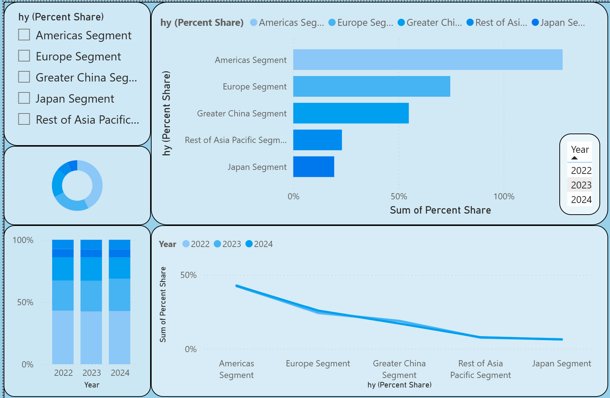

Featured Projects
📊 Power BI – Apple's revenue
For this project, I started by collecting Apple’s revenue dataset from bullfincher.io. I cleaned and transformed the data to make it usable in Power BI, ensuring consistency across regions and fiscal years. Then, I designed an interactive dashboard to visualise Apple’s revenue distribution across the Americas, Europe, Greater China, Japan, and Asia-Pacific (excluding Japan) for the years 2022, 2023, and 2024. To highlight different insights, I used a combination of visuals: a bar chart for comparing regional market shares, a donut chart for a snapshot of one year, stacked columns and line charts to analyse trends over time, and slicers to filter by year or region. I also created a filled map with pie chart markers to connect the data to geography and make the results easier to interpret. Through this dashboard, I was able to identify clear business insights: the Americas remain Apple’s largest market but show a slight decline, Europe demonstrates steady growth, and Greater China shows a consistent decrease that requires deeper investigation. Based on this, I suggested increasing marketing investments in Europe, reassessing the strategy in the Americas, and lowering the growth forecast for Greater China. This project demonstrates key data analyst skills such as data cleaning and transformation, dashboard design in Power BI, use of different visualisation techniques for comparative and trend analysis, and the ability to interpret data into actionable business recommendations..
View Dashboard {kind=link}
🧼 Excel – Data Cleaning
Cleaned and formatted a 1500-row CSV file. Verified data types and constraints for analysis.
Download Report🌐 Portfolio Website
Designed and coded this portfolio using HTML/CSS. Focused on layout, centering, and responsive design.
Visit Site